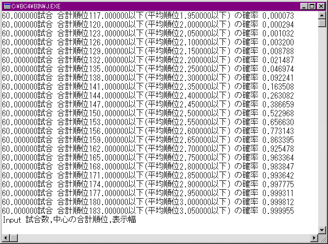

順位ランキングに載る確率と東風王者kamiに関する考察(爆)
2000/4/19 とつげき東北
導入：
前回のとつ論文「平均順位の偏りと信頼できる実力評価」の研究の際に副産物として研究した「順位ランキングに載る確率」の話だが、これ自体研究対象としておもしろいので、分離独立させた。
前回作成したプログラムを実行してデータを出し、前回と同じ前提の下に研究する。詳細は前回の論文を参照のこと。
ある実力の人が「ランキングに載る確率」を求めると共に、「ランキングと言えばあの人！」の人物像に迫ろう(爆)。
ランキングに載る確率・考察の手順：
下は解析パターン０での実行例である。

これは、「実力＝平均順位２．５の人」が６０試合打った時、偶然によってどの程度結果がばらつくか？ という結果である。
ここでモデルは「実力２．５位（実力Ｒ１５００）の人」であるが、このようなばらつきは実力に無関係に等しく起こると考えて、今後の研究を進める。
例えば「実力平均順位２．５の人がたまたま平均順位２．４を取る可能性」＝「実力平均順位２．３の人がたまたま平均順位２．２を取る可能性」というように考えるということである。
これを見れば、「実力２．５位」の人が「順位ランキング」に載るためのだいたいの条件である「６０試合で平均順位２．２０以下」を取る確率は２．１５％とわかる。Ｒ１５００のドシロウトが５０人挑戦すれば、１人は載るというレベルである。
「順位ランキングに載ろう！」と思いたって、いざ打ち始める場合、Ｒ１５００の実力だと現実的には「ムリ」である。
同様の偏りを考えるから、実力２．４位の人が０．２位分「たまたま勝って」順位ランキングに載る（平均順位２．２位以下を記録する）確率は、２．５位の人が「たまたま勝って」平均順位２．３位を記録する確率に等しく、上の表より約９．２％である。
以下も同じように考える。
結論：
順位ランキングに載る確率（通常ラン卓で６０試合ピッタシで挑戦する場合）
実力 確率 コメント
１２６０ 0.003％程度
先にテンホウが出ます(爆) テンホウ確率は0.00003％。６０試合で３００局あるとして楽勝です。
１３８０ 0.3％程度 どへた♪どへた♪どへた♪どへた♪どへた♪
１５００ ２％程度 １ヶ月に４キャラで挑戦すれば１年に１回載るよ(爆)
１６２０ ９％程度 ちょっとつらいねぇ
１７４０ ２５％程度 このへんから急激に載る確率が上昇
１８６０ ５０％程度 意外と載れるもんやね
１９８０ ７５％程度 はよ上ラン来いっちゅうねん(笑)
２１００ ９１％程度 第二でもこのＲを保つのはつらいねぇ・・
２２２０ ９８％程度 イカサマ♪
順位ランキングに載る確率（上ラン卓で６０試合ピッタシで挑戦する場合）
実力 確率 コメント
１６５０ 0.3％程度 ワイ卓からやりなおして♪ できればチャット中心
１７７０ ２％程度 上ランの１７００台はホンマ、何しでかすかわかりません('ρ`)リーチ後ミンカンなど
１８９０ ９％程度 上ランで順位ランキングに載るのはかなり厳しいです(´-｀)
２０１０ ２５％程度 第一上ランだと、このへんが限界かなぁ？ 「いつ見ても２０００超」て人は知りません
２１３０ ５０％程度 バケモノ( ´Д`)('Д｀
)ノ
２２５０ ７５％程度 メスチーソ
当たり前だが、上ランで順位ランキングに載ろうと思ったら、下ラン（失礼．）で載るよりはるかに難しい。
順位ランキング上位（２．０５位以内）に載る確率（通常ラン卓６０試合）
実力 確率
１５００ 0.1％程度
１６２０ 0.9％程度
１７４０ 4.7％程度
１８６０ １６％程度
１９８０ ３９％程度
２１００ ６６％程度
２２２０ ８６％程度
順位ランキング上位（２．０５位以内）に載る確率（上ラン卓６０試合）
実力 確率
１７７０ 0.1％程度
１８９０ 0.9％程度
２０１０ 4.7％程度
２１３０ １６％程度
２２５０ ３９％程度
さて。順位ランキングに載る確率というものが出たわけであるが。
「順位ランキング上位」と聞いて思い出すのは・・・そう、東風王者kami だ(爆)。
東風王者kamiに関する考察(
≧∇≦)ﾌﾞﾊﾊﾊ!：
まずは、東風王者kami の成績を簡単にピックアップしてみる。
適当に目についた第２４回麻雀大会～第３２回麻雀大会を取り出した。
第２４回 １位 １．６８１位 １８５試合
第２５回 着外
第２６回 １位 １．７９６位 １６１試合（ただしＨＮはM・Kamimura）
第２７回 １位 １．７８３位 ９８試合
第２８回 １位 １．７８３位 ２１２試合
第２９回 着外
第３０回 ２位 １．７８２位 １１０試合
第３１回 ３位 １．６２３位 ２３９試合
第３２回 １位 １．６８０位 １７２試合
なんともすばらしい成績としか言いようがない(笑)。
第２５回・第２９回が「着外（平均順位ランキング２００位以内に載っていない）」である。
第２５回では、得点ランキングの方に 東風主者kami や（４位 ２３３７点 ７２９試合） 東風玉者kami など（３９３位 ５３６点 ３２５試合） が登場している。
仮説１・「これらは 東風王者kami の別ＨＮであり、成績がたまたま芳しくなかった」
しかし普段平均順位１．８弱を保つ人間が、順位ランキングの着外（この回では２．２３４位より悪い順位）になる可能性は、上述の表より０．３％の確率でしか起こらないことである。従って、この仮説は棄却される。東風主者kami などは 「ホンモノ」とは別人である。ていうか、東風主者kami さん、４位、よくがんばりました(爆)。
第２５回・第２９回については、「東風王者kami は忙しかったので麻雀打たず(´-｀)」であると結論して良い。
「いや、でも待てよ！？」
仮説２・ひょっとしたら東風王者kami は麻雀が下手で(爆）、毎回複数キャラ作ってセコセコ打って、
良い順位が取れた場合だけＨＮを戻しているのではないか？ という仮説も立て得る(笑)。
では、東風王者kami は、１ヶ月にがんばって３０００試合こなしているとしよう(爆)。
１キャラあたりの試合数が平均１５０試合くらいなので、２０キャラで挑戦、ということになる。
２０キャラ打てば、１５０試合の水準だと、だいたい「実力より０．１７位良い」結果が期待できる（前回の論文参照）。
従って、「調子が良くて」平均１．７３位程度取れる、ということは、「悪くても実力１．９０位」以上はあるということである。
しかしこの実力の人が、全キャラ順位ランキングに載れず、そのくせ得点ランキングのためにＨＮを残す、というのは考え難い（少なくとも東風主者kami より良い成績が１つでも残る可能性は９５％以上であるから）。
やはり、第２５回・第２９回は「おやすみ」してたと合理的に結論できるのである。
仮説３・東風王者kami は麻雀の天才で、複数キャラ使わずに平均１．７３位をマークする
これはさすがにない。Ｒ２４４０程度という水準があり得ないことは明らかである。つまり、東風王者kami は、もしまっとうなやり方をしているなら「セコセコキャラを作る」タイプである。
では次に、東風王者kami はどの卓で打っているかを検討しよう。
仮説４・東風王者kami は上ランで打つ打ち手である
上ランで平均順位１．９０保つということは、普通のラン卓でなら平均順位１．７２位の水準を保つことである。ラン卓でなら簡単にランキングに載れるのに、セコセコと２０キャラも作って打つことは考えがたい。故に東風王者kami は、通常のラン卓の打ち手であると推察できる。
上記の考察を総合すると、東風王者kami の人物像（？）は次のいずれかである（論理的帰結である）。
１）ラン卓で１ヶ月に３０００試合程度必死で打つ頑張り屋さん♪
２）ムダに上ランのみで３０００試合打ってランキングを目指す意味不明君♪
３）イカサマ♪（多重など）
さて、１ヶ月に３０００試合ということは、１日に１００試合打つということである。
１試合に２０分かかるとして、１日で３０時間以上 打たなければならない。
Σ(´ﾛ｀;)ｶﾞｰﾝ １日は２４時間であることと矛盾しましたヽ(
´ｰ`)ﾉ
上の １） と ２） はあり得ません。結論は、言わずもがなです。
とつの見解を述べて締めくくりとします。
実は 東風王者kami って、グループなんです(爆)
３０人くらいの「強い人」集めて、みんなでランキングに挑戦(笑)
良い結果が残せた人がその月の「東風王者kami」ねヽ(
´ｰ`)ﾉ
強くなった とつ も、そろそろお呼びがかかるはず～♪
「とつさん、東風王者kami グループにぜひ・・・」
( ≧∇≦)ﾌﾞﾊﾊﾊ!
東風王者kami後日談：
この論文を発表してからしばらくして、東風「主」者kamiさんが待合いでとつに声をかけてきてくれた。
曰く「私が東風主者kamiです」「論文、大笑いしながら読ませていただきました」「実際の東風王者kamiは嫌なやつで、問いつめたら暴言を吐いて落ちました」など。
ただし、当人が東風「主」者kamiである、確固たる保証はないことを一応確認しておく。また発言の内容の真偽についてもここでは触れない。
また、東風王者kamiは、（偶然的、または必然的に）この論文を発表して１ヶ月後くらいから、ランキングに顔を出さなくなり、また東風でも見かけなくなった。
知り合いから「東風王者kami」というＨＮの打ち手がランキング卓で、明らかな「差し込み」によって上がっている牌譜も手に入れたが、これが当の「東風王者kami」なのか、それともたまたま何らかの事情でＨＮを奪われて多重され、その後またＨＮを奪い返したかは不明である。
おれ個人の見解では、東風荘は「システムで許されたいかなる行動も個人の自由である」と考えている。
従って、仮に、もし仮に東風王者kamiが「多重」などでランキング上位を取っていたとしても、それを直接どうこう言うつもりは全くない。それが嫌な人は、東風に来るのをやめるか、mjmanに直訴すればいいだけのことだ。当然だろう。
このことを理解せず、「マナー違反」だとかわめいているような人物こそ、とつが最も嫌う人物だ。
とにかく、自分がやられて嫌なら、やられないように現実的な対処をとれる力を持つこと。。
「多重を防止しろ！」との声が大きければ、mjmanだってちょっとシステムをいじる気になるかもしれない（尤も、原理的に多重防止は不可能であると考えられるが 笑）。
「マナー違反」「他人の迷惑」がどうのと、ムダに語って何もできないのが一番ださいと思う。